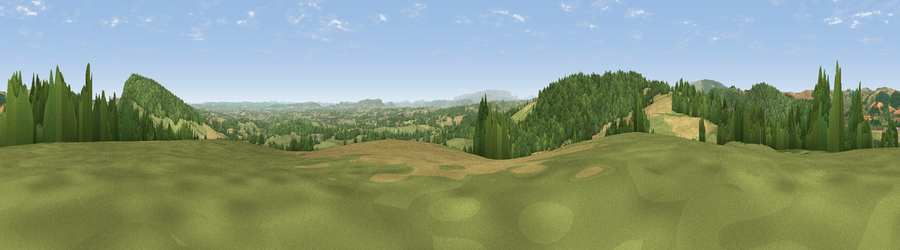

Viewpoint near Titley
#5539 in England · top 14% of its area beats it · near Titley · access?Where it is
The exact computed spot (SO 32675 61175). Click the marker for map links.
Public access: no public right of way or access land is recorded at this exact spot — it may be on private land. Computed from Natural England's CRoW access layer and OpenStreetMap rights of way — not the legal definitive map. Always verify locally.
The view, rendered

A 360° render of this exact spot computed from the terrain model, tree cover and land cover — summer colours, afternoon light, calibrated against photographs of famous viewpoints. Real trees, hedges and buildings will differ in detail.
The panorama
Grey silhouette: terrain skyline in each direction (720 bearings, Earth curvature and refraction included). Dashed green: skyline with trees (+15 m) and buildings (+8 m) as obstacles. Blue strip: how far the ground is visible on each bearing.
Where the view opens
Wedge length = distance to the farthest visible ground on that bearing (vegetation-aware). Rings at 10, 25 and 50 km.
What fills the view
40% woodland · 38% grassland · 21% cropland ·
Angular shares of the visible panorama (visual magnitude), not map area. Landscape diversity 0.48 (0–1 Shannon).
Key numbers
More beautiful places nearby
The staircase of upgrades: each row has a higher view potential than everything closer. Driving times are estimates from straight-line distance, calibrated against real road routing — check an actual route before setting out.
| Place | Direction | Drive | Score |
|---|---|---|---|
| Viewpoint near Titley | SW · 1 km | ~4 min | 71.9 |
| Viewpoint near Titley | NE · 2 km | ~5 min | 75.4 |
| Rushock Hill | WSW · 4 km | ~9 min | 80.2 |
| Viewpoint near Leinthall Starkes | NE · 14 km | ~25 min | 80.3 |
| Gatley Hill | NE · 15 km | ~26 min | 82.6 |
| Viewpoint near Asterton | NNE · 28 km | ~45 min | 83.0 |
| Titterstone Clee | ENE · 31 km | ~49 min | 83.8 |
| Garway Hill | SSE · 38 km | ~57 min | 84.6 |
52.24462, -2.98748 · source: screening · position refined by local search. Computed location — check access rights before visiting.